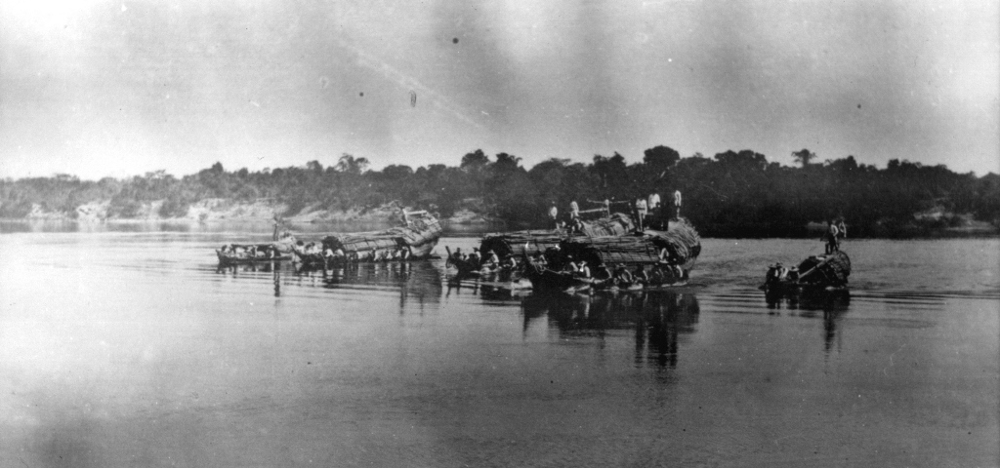

<style>
    section {
        display: flex;
        flex-direction: row;
        align-items: center;
        justify-content: center;
        gap: 40px;
        margin: 40px 0;
    }


    .conteudo {
        max-width: 1000px;
        font-family: Arial, sans-serif;
        font-size: 16px;
        line-height: 1.6;
        color: #333;
        text-align: justify;
    }

    .conteudo p {
        
        margin-bottom: 16px;
    }
    img {
        width: 600px;
        height: auto;
        border-radius: 8px;
    }
</style>
<section>

    <div class="conteudo">
        <p>Foi com o surgimento deste porto comercial que também aconteceram os primeiros passos desta comunidade rumo ás áreas administrativas, intelectual, cultural e religiosa. Com essa estrutura, era certa a evolução administrativa do lugar. E foi isso que ocorreu, por força de lei provincial. A 14 de Novembro de 1831, ano em que D.Pedro I abdicou ao trono, o Julgado de Porto Real foi elevado a Porto Imperial. Aquela outorga definia em lei a sede definitiva do município, que por legislação pertinente tinha de receber órgãos de administração pública com a competência de normatizar o cotidiano daquela já destacada comunidade.</p>

        <p>Após a contagem evolutiva de trinta anos da instalação de Porto imperial, exatamente em 13 de julho de 1861, por determinação da resolução provincial n° 333, assinada por José Martins Alencastro, presidente da Província de Goyaz, nascia Porto Nacional, o mais importante polo cultural, político, econômico e social do então Norte Goiano, hoje Estado do Tocantins. Naquele dia foi entregue as autoridades do lugarejo o diploma de Emancipação Política do Município que deu seus primeiros passos no antigo Porto Real do Pontal, onde tudo começou, com muitos sonhos, fé e esperança no futuro.</p>
    </div>
    <div class="imagem">
        
    </div>
    

</section>